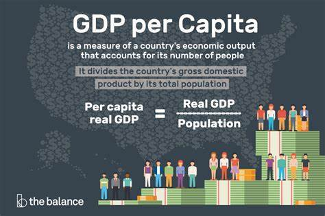
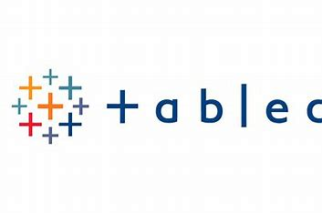

Data Cleaning and analysis in Python and
Data Visualization in Tableau. This Coffee Production analysis project, conducted using Python (Pandas) for dataset exploration and aggregation, Excel for transformation, and Tableau for creating interactive dashboards and presentations, delves into global coffee market trends from 2010-2020. Motivated by a personal connection to Ethiopia's rich coffee culture, the study explores the impact of coffee origins on the global market. Key questions focus on agricultural land per capita across income levels, regional specializations' influence on coffee production, and the relationship between government investment in agricultural research and coffee production efficiency. Data sources include Our World in Data for coffee production and agricultural metrics, and the World Bank for world economy data. Challenges include addressing data quality, industry dynamics, and the subjective nature of consumer preferences. The Tableau dashboard link visually presents the insights gained from this comprehensive analysis.
In this SQL project, I performed a comprehensive analysis of a prescription dataset, showcasing my skills in data manipulation and extraction. I tackled diverse questions related to top prescribers, specialties, drug costs, and geographic patterns. The project demonstrates my proficiency in SQL, highlighting my ability to handle complex queries, calculate percentages, and address missing values. Specifically, in a segment focused on pain management specialists in Nashville.

In this Python project, I organized local repositories, downloaded and processed GDP and internet use CSV files, and utilized Python packages for exploration. I addressed issues like data types and missing observations in the GDP dataset. Visualizations for 2020 offered insights into GDP per capita distribution. Analyses included comparing GDP values over decades, identifying top and bottom countries in 2020, and exploring trends for the top internet users. Merging datasets allowed further exploration, highlighting trends in GDP for the top internet users in 2014.

In my analysis of the Nashville City Cemetery dataset, provided by the Nashville City Cemetery Association, I embarked on a journey to uncover historical insights. Addressing various questions, I employed Excel to perform tasks such as identifying the top 10 recorded causes of death, creating visualizations like bar and line charts, and exploring patterns in burials over decades. Additionally, I extracted last names from the dataset and identified notable individuals buried in the cemetery.

In this SQL project based on the Indeed Data Scientist/Analyst/Engineer dataset, I performed various analyses using the PostgreSQL database and the data_analyst_jobs table. The project covered essential aspects such as dataset overview, exploratory analysis of the first 10 rows, geographical distribution of postings, review count analysis, state-wise average ratings, unique job titles exploration, company review analysis, and job title filtering. This work demonstrates my proficiency in SQL and my ability to extract meaningful insights from real-world datasets.

Coffe Chain Sales Analysis, interactive dashboard

My Tableau Profile where you can find all my dashboards.